Mamikos
Mobile App Revamp (Case Study)
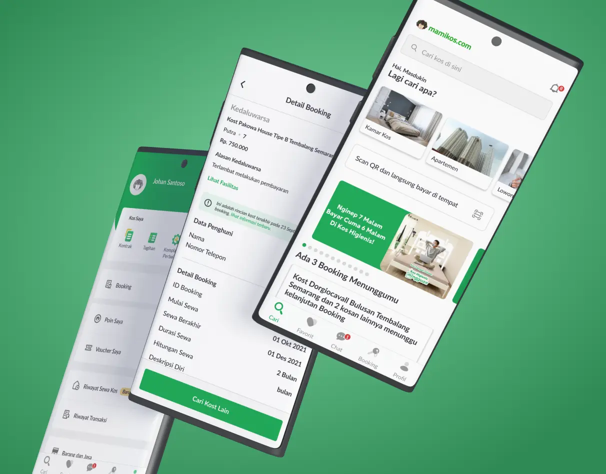
- Client
- Independent undergraduate thesis project, not affiliated with Mamikos.
- Period
- August 2021 – April 2022
- About
- Mamikos is the most popular boarding house (kost) marketplace app in Indonesia. Mamikos helps tenants select and book their preferred kost more quickly and affordably. However, some users have encountered difficulties while using the app.
- Role
- UI/UX Designer
- Responsibility
- Responsible for all design process, from user research, problem definition, interface revamp, prototyping, and usability testing.
- Tools and Technology
- Figma, Recorder, Google Meet, Google Forms, Google Docs
- Prototype
- Try the Figma prototype
Overview
- Project Background
- Despite its large user base, Mamikos has received reviews from frustrated users. The success of Mamikos as a kost search application may also be threatened by the emergence of competitor applications. Thus, usability evaluation is conducted to improve user satisfaction and identify usability issues.
- Problem Statement
- Multiple users on Google Play Store are complaining about several problems in Mamikos, such as confusing app navigation, inability to find kost that meet their preferences, and difficulty finding critical information.
- Scope
- This project’s scope is to revamp Mamikos mobile app from the tenant/occupant perspective.
Research
Survey Questionnaire
- Respondent Detail
-
- 50 participants
- 20 – 30 years old
- College students and employee
- Mamikos users and non-users
- Question Topic
-
- User Profile
- Alternatives for kost searching solutions
- Motives and expectations for a kost searching app
- Motivations for using Mamikos for kost searching
- Favorites, pain points, and expectations for Mamikos
- Insights
-
26%
use Mamikos because of its popularity
16%
use Mamikos because it connects user to tenants
User motives for using a kost searching app
- Numerous kost options available for comparison
- Reduce the need for in-person, direct survey
- Able to discover kost in new or unfamiliar areas
- Save time, money, and effort.
Testing Mamikos App
- Participant Criteria
-
- 5 college students, 5 employees
- 20 – 30 years old
- Kost seekers using Mamikos users or similar app
- Tasks
-
- Task 1 Search for kost
- Task 2 Search for kost and filter by criterias
- Task 3 Search for kost using map feature
- Task 4 View recently viewed kost menu
- Task 5 Contact kost owners
- Task 6 View favorited kost
- Task 7 Book a kost
- Task 8 View booked kost menu
- Satisfaction Score
-
56.5/100 (D)
Using System Usability Scale
- Success Rate
-
60%
Task 3
75%
Task 4
90–100%
Other tasks
- Average Success Rate
-
88.75%
8 tasks
Define
Existing App Analysis
- Pain Points
-
Search
- Search location suggestions don't match the users surrounding area
- Search with map is hard to locate and confused with 'Search Nearby' button
Map Markers
- Lack of explanations for the map’s markers, makes it hard to use
- Map’s markers position changes every time the screen is swiped
Kost Browsing History
- Hard to find kost browsing history menu, user confused with similar menu
Chat with Tenants
- Users have to choose a template before using chat feature, with no user custom text
- Users can't use chat template multiple times in the roomchat
- Users want to know when tenants were last active on the app
Kost Details
- Difficult to differentiate full booked kost or kost that can't be booked
- No explanation about Kos Andalan, Kos Higienis, etc.
- Gain Points
-
- Users can contact the owner through the app
- All information on kost detail, facilities, and cost is readily accessible
- Users can filter kost by cost, facilities, and many more
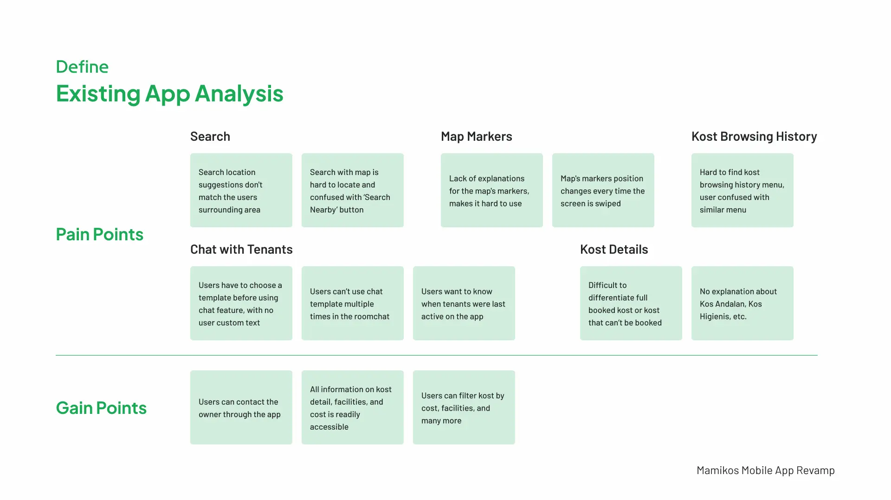
Ideate
How Might We & Solution Ideas
- Search
-
Enable users to select area more accurately
- Make search suggestions correspond to user location/area
Make map search flow easier to access
- Add map button in search
- Adjust ‘Search Nearby’ button copy
- Map Markers
-
Make map markers easier to use and understand
- Add new section with legend for markers
- Add a button to change markers position based on movement to certain area
- Ensure markers stay in place when the screen is swiped
- Kost Browsing History
-
Allow users to see kost browsing history easily and directly
- Adjust kost browsing history flow
- Change ‘Riwayat Kos’ menu copy
- Chat with Tenants
-
Improve chat feature to be more intuitive and flexible
- Redesign chat template flow to go directly to the roomchat
- Include chat template options to the roomchat
Inform users about tenant’s app status
- Display tenant’s last online status
- Kost Details
-
Show a clear distinction for unbookable kosts
- Highlight unbookable kost with tooltip
Inform users about Mamikos kost segmentations
- Add a section with information about Mamikos kost categories
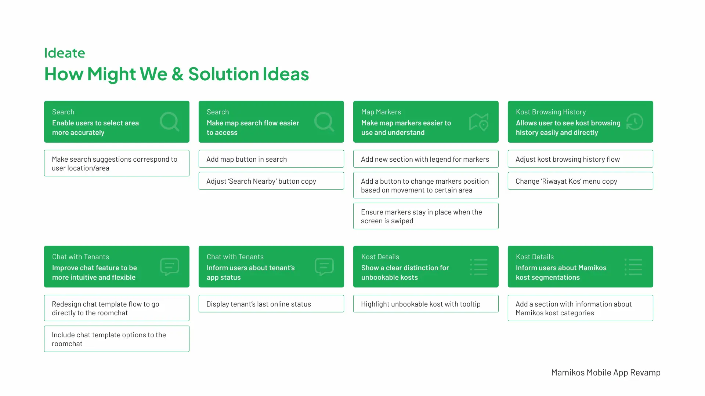
Prioritization Matrix
The solution ideas are ranked by impact and effort to decide what to design first.
- High impact, low effort
-
- Add a button to change markers position based on movement to certain area
- Ensure markers stay in place when the screen is swiped
- Redesign chat template flow to go directly to the roomchat
- Include chat template options to the roomchat
- Add new section with legend for markers
- Adjust kost browsing history flow
- Change ‘Riwayat Kos’ menu copy
- Add map button in search
- Adjust ‘Search Nearby’ button copy
- Make search suggestions correspond to user location/area
- Display tenant’s last online status
- Lower impact
-
- Add a section with information about Mamikos kost categories
- Highlight unbookable kost with tooltip
Search User Flow
Users can now search directly with the map, and will be redirected to the search results. In the new flow, users input the search query on the map page. The results are displayed on the map, and users then select a kost to open its details.
Kost Browsing History User Flow
In accordance with user habits, users can now easily find kost browsing history page from the ‘Profil’ menu. In the new flow, users go to the ‘Profil’ menu and click the ‘Pernah Dilihat’ menu. The existing path through the ‘Favorit’ menu stays available.
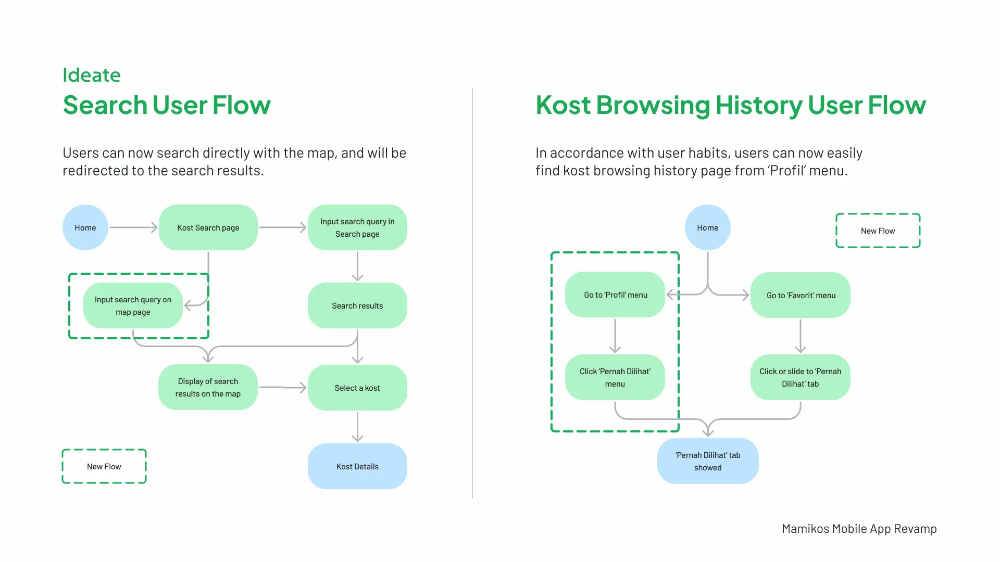
Chat User Flow
Users can now chat with tenants directly and customize their chat templates on roomchat. Before, users chose a chat template and clicked ‘Kirim’ before they reached the roomchat. After, users go to the roomchat right after they click the ‘Tanya Pemilik Kos’ button. There, they choose a chat template or write a new message, then send it.
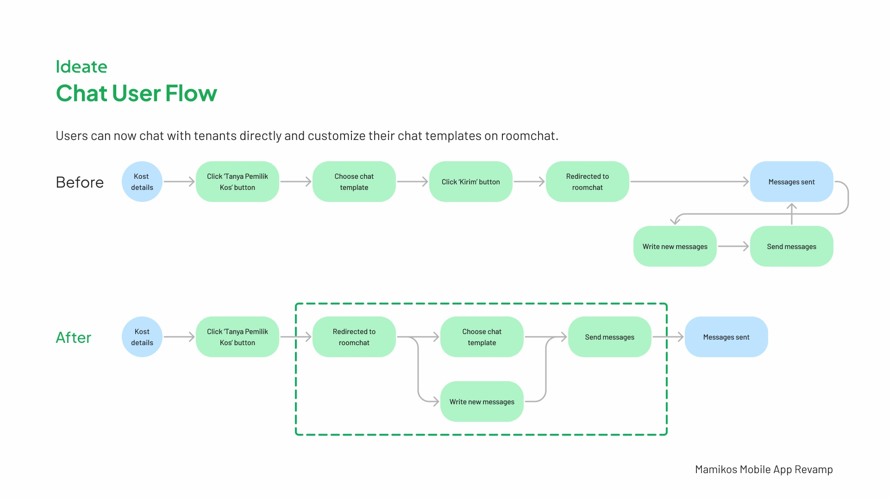
Prototype
Style Guide
All colors, typography, icons, and components come from the current Mamikos app, so the revamped experience stays as close as possible to the original. The improvements focus on the user experience: component placement, user flows, and the addition of new elements, among others.
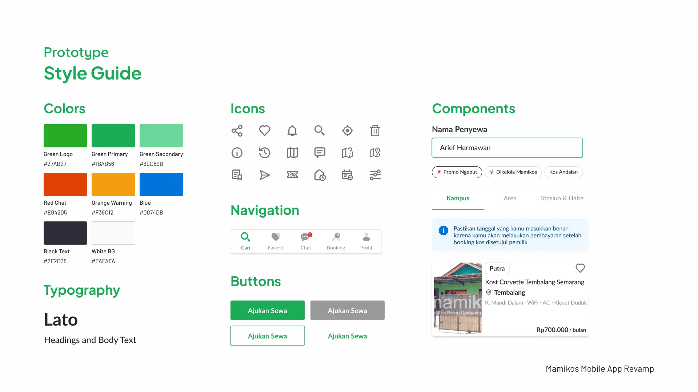
Search Page
- Add map button in search
- Makes the flow simpler for users who want to search for kost using the map immediately.
- Adjust ‘Search Nearby’ button copy
- Further differentiates the functions of Search Nearby and the map button. The new copy clarifies that the button directs users to a list of nearby kosts.
- Make search suggestions correspond to user location/area
- Ensures that the displayed area suggestions match the user’s region, which prevents users from clicking on other regions.
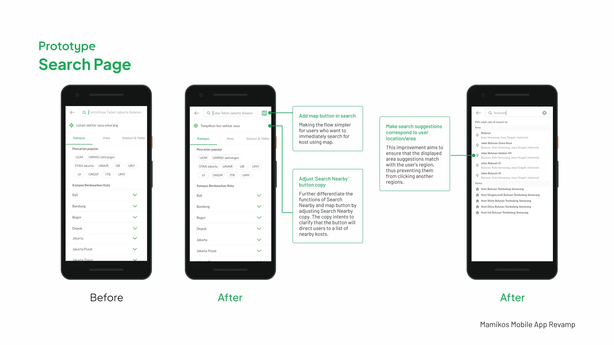
Map Page
- Add a button to change markers position based on movement to certain area
- Users can use the button to display new markers in a different area if the search results in a certain area are not satisfactory.
- Add new section with legend for markers
- Users can access the information button to get details on marker colors and texts, which avoids confusion while using the map.
- Ensure markers stay in place when the screen is swiped
- Map markers stay in place while users swipe the screen, which allows users to search for kost in existing markers.
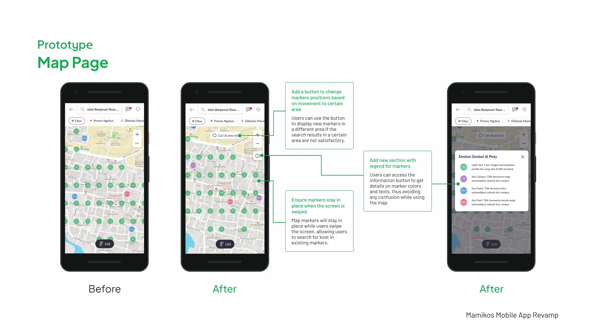
Roomchat Page
- Display tenant’s last online status
- The online status of a tenant can greatly influence kost booking decisions. It allows users to make informed choices about whether to proceed with booking or not.
- Include chat template options to the roomchat
- Users can now enter the roomchat directly and either create new messages or choose chat templates, according to their convenience.
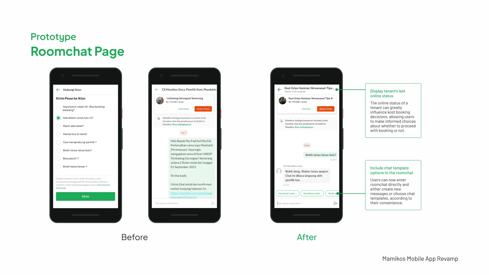
Profile Menu Page
- Adjust kost browsing history flow
- Based on user habits, users can see their kost browsing history from the ‘Profil’ page with the addition of the ‘Pernah Dilihat’ menu.
- Change ‘Riwayat Kos’ menu copy
- Eliminates user confusion that mistakes this menu for kost browsing history. Adding ‘Sewa’ to make ‘Riwayat Sewa Kos’ emphasizes its function to display kost renting history.
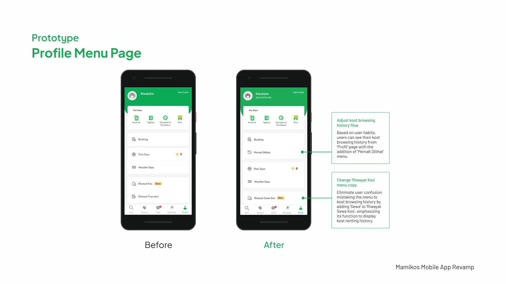
Testing
Testing Mamikos Prototype
- Participant & Task
- Identical participants and tasks were employed in both the existing app and prototype testing to compare their usability.
- Findings
-
- Chat templates are not easily readable, users have to swipe the screen repeatedly to view all the templates.
- Users should be able to locate nearby kosts based on a particular location without having to specify the location name manually.
- Satisfaction Score
-
80.25/100 (B)
Prototype score
56.5 (D)
Existing app score
Using System Usability Scale
- Average Success Rate
-
100%
Prototype score
88.75%
Existing app score
Iteration
Map Page
- Show nearby kosts in map
- Gives users the option to search for kosts close to their area and around it.
- Search with map pinpoint
- Users can now search for kost in a specific area by pinpointing the desired location on the map directly, which provides a new searching option.
Roomchat Page
- Redesigned chat template section
- Improves user readability by fully displaying all questions and shortening some of them. Users can expand or collapse the section based on their need.
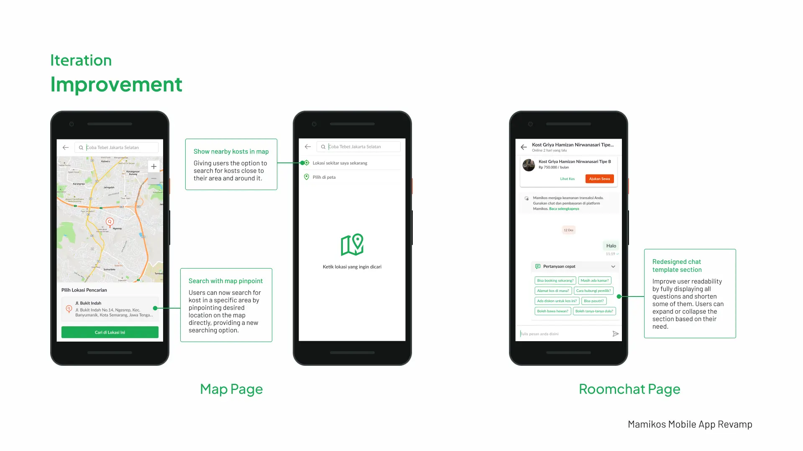